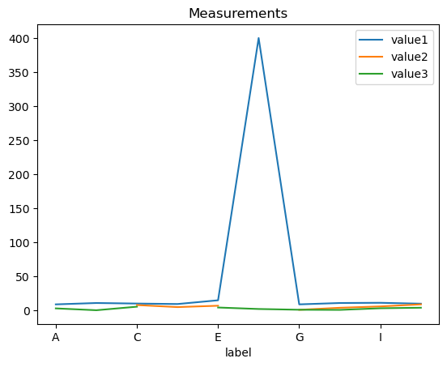

Introduction to Pandas#
In basic Python, we can use dictionaries for data handling, containing data as lists. While these basic structures are convenient for simple data handling, they are suboptimal for advanced data processing and analysis.
For such, we introduce pandas, one of the primary tools for handling and analysing tabular data in the Python. Pandas’ primary object, the “DataFrame”, is a 2-dimensional indexed and labeled data structure with columns of different data types, and is extremely useful in wrangling data.

See also:
import pandas as pd
import numpy as np
import matplotlib.pyplot as plt
Creating DataFrames#
DataFrames from dictionaries#
Assume we did some measurements and have some results available in a dictionary:
measurements = {
"label": ["A", "B", "C", "D", "E", "F", "G", "H", "I", "J"],
"value1": [9, 11, 10.2, 9.5, 15, 400, 9, 11, 11.3, 10],
"value2": [2, np.nan, 8, 5, 7, np.nan, 1, 4, 6, 9],
"value3": [3.1, 0.4, 5.6, np.nan, 4.4, 2.2, 1.1, 0.9, 3.3, 4.1],
"valid": [True, False, True, True, False, True, False, True, True, False],
}
This data structure can be easily transferred into a DataFrame which provides additional functionalities, like visualizing it nicely:
df = pd.DataFrame(data=measurements)
df
| label | value1 | value2 | value3 | valid | |
|---|---|---|---|---|---|
| 0 | A | 9.0 | 2.0 | 3.1 | True |
| 1 | B | 11.0 | NaN | 0.4 | False |
| 2 | C | 10.2 | 8.0 | 5.6 | True |
| 3 | D | 9.5 | 5.0 | NaN | True |
| 4 | E | 15.0 | 7.0 | 4.4 | False |
| 5 | F | 400.0 | NaN | 2.2 | True |
| 6 | G | 9.0 | 1.0 | 1.1 | False |
| 7 | H | 11.0 | 4.0 | 0.9 | True |
| 8 | I | 11.3 | 6.0 | 3.3 | True |
| 9 | J | 10.0 | 9.0 | 4.1 | False |
DataFrames also provide some convenient methods to get an overview of the DataFrames’ structure and the containing data:
info()to summarize the DataFramedescribe()for descriptive statisticsplot()for simple plots of DataFrames and Series
# Show structure of the DataFrame
df.info()
<class 'pandas.core.frame.DataFrame'>
RangeIndex: 10 entries, 0 to 9
Data columns (total 5 columns):
# Column Non-Null Count Dtype
--- ------ -------------- -----
0 label 10 non-null object
1 value1 10 non-null float64
2 value2 8 non-null float64
3 value3 9 non-null float64
4 valid 10 non-null bool
dtypes: bool(1), float64(3), object(1)
memory usage: 458.0+ bytes
# Show basic descriptive statistics of the containing data
df.describe().transpose()
| count | mean | std | min | 25% | 50% | 75% | max | |
|---|---|---|---|---|---|---|---|---|
| value1 | 10.0 | 49.600000 | 123.130184 | 9.0 | 9.625 | 10.6 | 11.225 | 400.0 |
| value2 | 8.0 | 5.250000 | 2.815772 | 1.0 | 3.500 | 5.5 | 7.250 | 9.0 |
| value3 | 9.0 | 2.788889 | 1.769495 | 0.4 | 1.100 | 3.1 | 4.100 | 5.6 |
# Show descriptive statistics for categorical data
df.describe(exclude=['number']).transpose()
| count | unique | top | freq | |
|---|---|---|---|---|
| label | 10 | 10 | A | 1 |
| valid | 10 | 2 | True | 6 |
# Plot the data
df.plot(x='label', y=['value1', 'value2', 'value3'], title='Measurements')
plt.show()

Saving and loading DataFrames#
We can save this DataFrames for continuing to work with it. We chose to save it as a CSV file. You should generally always store your data in such an open, compatible format with well-defined specifications, (not necessarily CSV).
df.to_csv('data/measurements_1.csv', index=False)
Stored DataFrames can be read with pandas from various formats, so we are able to read files into a DataFrame again.
See also:
df_new = pd.read_csv('data/measurements_1.csv')
df_new
| label | value1 | value2 | value3 | valid | |
|---|---|---|---|---|---|
| 0 | A | 9.0 | 2.0 | 3.1 | True |
| 1 | B | 11.0 | NaN | 0.4 | False |
| 2 | C | 10.2 | 8.0 | 5.6 | True |
| 3 | D | 9.5 | 5.0 | NaN | True |
| 4 | E | 15.0 | 7.0 | 4.4 | False |
| 5 | F | 400.0 | NaN | 2.2 | True |
| 6 | G | 9.0 | 1.0 | 1.1 | False |
| 7 | H | 11.0 | 4.0 | 0.9 | True |
| 8 | I | 11.3 | 6.0 | 3.3 | True |
| 9 | J | 10.0 | 9.0 | 4.1 | False |